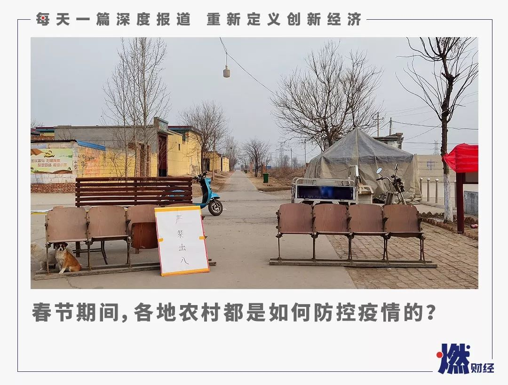
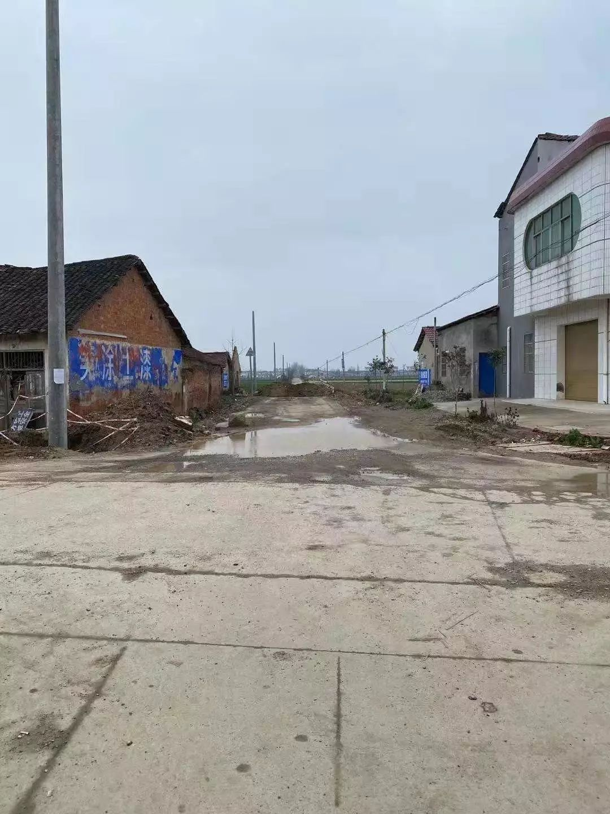

不止有武汉：湖北疫区17城实录（下篇）
原文链接 备份链接 这是一场无法预知开始、但也许可以看到结局的抗击疫情特殊战役，它不仅仅是疫情爆发地汉口的战役，更是武汉及周边，湖北、乃至全国的战役 文 |《财经》记者 房宫一柳 黎诗韵 管艺雯 宋玮 高洪浩 余洋洋 陈晶 实习生 张凡 …

《战疫口述记》，是燃财经在新型冠状病毒肺炎期间推出的特别栏目，记录疫情亲历者的观察和感受。本文为第2期，第1期请见《我在武汉战肺炎》。
作者 | 闫丽娇 唐亚华 孟亚娜
金玙璠 黎明 孔明明 苏琦
编辑 | 周昶帆
春节返乡人口多、医疗卫生条件有限、防控意识薄弱，很多农村地区变成了防控死角。1月26日，中央应对新型冠状病毒感染肺炎疫情工作领导小组会议上，明确指出了要高度重视农村疫情防控。
新冠肺炎疫情还在进一步蔓延，疫情爆发以来，尽管多地取消了庙会、集会等春节活动，村委会也在积极宣传“春节期间禁止走访亲友”，一些乡镇甚至已经封路，但仍有农村的长辈没有足够重视，不戴口罩、不听劝告，正常走访亲友、大摆宴席。
有些村民认为，自己离武汉较远，而且村里人口流动性不强，在地理上有足够的安全感。也有人觉得，没有公布本村的确诊病例，疫情和自己没有关系。但越来越多的村镇已经重视起来。在河南周口，村书记要从早上4点工作到晚上12点，时刻监控疫情动向；河南信阳，有村镇调来了挖掘机，在进村路口设下屏障，其他地区的村镇也正在采取封路措施；湖北荆门和荆州，村民们完全不重视的意识正在发生变化……
春节期间，燃财经采访了湖北、河南、河北等7个乡镇的村民，希望通过他们，了解到更多农村防疫的真实情况。
***现在不知道还能不能回家***
***各方都在统计我***
王子恒 20岁 河北省定州市某村村民
我是武汉理工大学大三学生。去年12月，我还在武汉，疫情已经有预兆，但当时没有重视，我们寝室像以前一样出去吃饭、玩。1月12号，我们各自启程回家，我当天从汉口抵达定州，然后家里开车接我回了县城。直到回家后几天，1月20号左右，武汉新型肺炎的消息铺天盖地，我被动接收消息，才开始关注。
我仔细回忆，从离开武汉到现在半个月时间，我没有出现任何发热、胸闷、头疼、打喷嚏的情况，而且每天熬夜不吃早饭，出门穿得薄，仍然没有患病。
这几天真正见识到国家力量了，我是平时谁也不会关注的小角色，只因为在武汉读书。
三十（24日）、初一（25日）这两天我回农村老家，照常串门。各方面都在打电话给我和我身边的人。大年三十早上，高一文理分班前班主任和同学打电话问候我，小区居委会问我妈我的情况。大年初一，小区居委会、小区物业让我妈务必控制我不让出门，小区所在城西村村委会打电话给我姥爷让控制住我。初三（27日）早上再次被高中所在城市教育局七点多打电话询问近况。
我爸也在被要求统计我（的情况），因为我爸是老家村委会的人。因为疫情，我爸从初一下午就开始加班忙这事，县里开会、村里开会，初二上午用电脑列出来了一份巡逻表，把村里的壮年男子分了二十个小队，分队巡逻。
我现在（接受采访时）在从老家回县城的路上，路过几个村子，有的已经用挖掘机搬大石头把村口封死了。我不知道还能不能从老家农村回县城了。我怕我再不回去，就回不去了。我县城家里所在小区已经戒严，不让进车，我目前已经过了十四天病毒潜伏期，但不知道能不能进小区。如果能回到家，我就不出门了，各方面都在统计我。
网络上消息太多太乱了，我个人现在只相信国家正规权威部门发布的消息，和我在武汉接触过的朋友的话。别的，家人群里转发的，微博、贴吧、抖音、快手上的任何个人消息我完全不信。个人狭隘的信息接收渠道，加上大部分人受教育程度不高，对待这种国家重大事件没有任何经验，所以任何个人言论可信度都太低。
这期间我个人也收到了很多同学、朋友的关怀，非常感谢大家，我身边人对我完全没有什么异样的态度，因为我很健康，这几天见的朋友、家人也没有那种苛责嘴毒的。我个人承诺在今后几天，我自己除非万不得已，不会出家门，保护别人也保护自己。
***从早上4点工作到晚上12点***
***目前我也只能做到这样***
刘先生 50岁 河南省周口市某村村书记
我是我们村的村书记，2002年下半年上任，上任没多久正好赶上非典。非典那时，所有返乡人员都要先送到村里的一个学校进行隔离，当时隔离时间是7天。我觉得现在跟非典那时候很像。
今年我是1月21日接到镇上的通知，当时所有村书记下午6点钟赶到镇去开“疫情防治大会”。会议通知我们，根据新型冠状病毒感染的肺炎指挥部办公室的通知和疫情实际情况，所有村都要严把各关卡，做到有指挥棚、有值守、有记录，24小时坚守，吃饭轮流换班。没有十分特殊情况的人员、车辆不准出，让我们严格遵照执行。如果有武汉返乡人员或者接触过武汉人的返乡人员，要居家隔离14天，设立台账，每天测量体温，有承包人和责任人专门负责。如果期间有发烧，立刻上报上级疫情防控中心。
回到村里之后，我们村上的乡村医生和村干部总共9个人开始彻夜排查。外出返乡人员，不管从哪个地方回来，只要是在最近20天内返乡，都要在家里和家人一起自我隔离。因为即使他们不是从武汉回来，也有接触到武汉人的风险。
在这个过程中，我们会挨家挨户去劝说大家不要害怕，这个病毒目前可防御，大部分人能理解我们的工作，再加上电视、网络也一直在提醒大家不要出门，要戴口罩，如果有人自己跑出来，我们的干部会跟着他进行监督。乡村医生每天会进行体温测量和排查，普通的发烧感冒也需要汇报。
村里的广播从早上5点钟开始播放需要注意的要点，比如不走亲戚、出门戴口罩、勤洗手等，一直播到下午结束。我们还会开着宣传车挨家挨户去宣传，也会在村里张贴海报，多方宣传和动员。
 村里墙上张贴的举报海报 来源 / 受访者
村里墙上张贴的举报海报 来源 / 受访者
 村里的疫情宣传车 来源 / 受访者
村里的疫情宣传车 来源 / 受访者
 村里张贴的宣传标语 来源 / 受访者
村里张贴的宣传标语 来源 / 受访者
从1月26日开始，每天下午5点半，我们还需要准时跟县委书记和其他县干部开远程电话会议，收听最新的动态和工作指导，比如他们会通知我们做好宣传、不要引发群众恐慌、做好自己的防护措施等。现在群众也逐步意识到问题的严重性，自己会自觉不多出门、不走亲戚，出门戴口罩已经成为了每个人的常识。目前村里暂时还没有发现从武汉回来的返乡人员，群众大多数比较服从安排，整体状况还算稳定。
这几天，我们9个人每天早上4点钟起床，开会、安排工作，然后开始在村里宣传、排查，等到半夜12点之后确认村里路上没人后，再回家休息，每天的工作时间没有限制，争取把隔离工作做扎实。家人也会担心我，但我会做好防护措施，目前我的力量只能做到这样。
虽然外界现在有人说我们是不是对武汉返乡人员太冷漠了，有些人也会因害怕而不敢说自己是从武汉返乡的，但事实上这也是为了他个人和家庭健康着想，我们现在能做的就是让他们知道，不要害怕，大家一起度过难关。
*****挖掘机挖土封路*****
*****退了票安心在家*****
陈凯 28岁 河南省信阳市某村村民
疫情虽然严重，我们村的人整体上感觉还是理解的，很淡定。部分人家里有生意或想出行，稍微有点急。村民的重视程度也很高，我都没怎么说服父母，只是跟他们普及了一些可靠信息。
村里隔不远就会有喇叭，每天都在播报疫情新闻、防护建议等，整个防控氛围已经很浓了。父母辈的人，不仅会看电视新闻，也经常在手机上刷抖音、快手、微信之类的，相关信息也接触不少。另外，村干部也不断群发信息和短信。
进村的路已经封了。1月26日上午十点左右，窗外突然传来轰隆隆的机器声。我朝窗外看过去，有一辆正在作业的挖掘机和停在一旁的拖车，挖掘机就地取材，在路边挖土“填路”。

挖掘机在封路 来源 / 受访者
路障在距离我们家十来米处的一个丁字路口，分别通向三个村庄，也算是两个乡镇的交界处。第一铲的土刚堆好，南方一辆白色的车急驶过来，但在土堆那还是不得不停了下来。
当时路面还有缝隙，在挖掘机和土堆之间，但它没有“挤”过来的勇气，犹豫了大概两分钟，掉头而去。紧接着，更多车开了过来，停下、犹豫、掉头。我家和邻居家门口，一时成了停车场，一辆辆由南北而来的车辆依次掉头返回。
不知道是因为我的家乡疫情较重还是我爸的觉悟本身就高，他一直表现得比我还警惕和紧张，之前就已经提前通知在邻市的二姐不要回来。村里封路后我爸打电话给我在县城的大姐，催她们赶快回家。
大姐夫妻俩在县城商场经营一家餐厅，1月25日晚上接到通知，原定初二营业的商场，已经暂时延迟到初五开业。为此，他们连夜开车赶去县城，把一些生鲜食材收进冰箱，尽量止损。
紧接着我爸又打了好几个电话，通知更多的亲友放弃出行计划，嘱咐好好待在家。
封路时邻居大妈站在我家门口，她家就在我家斜对角，此时正隔着挖掘机。她说，我这回家得翻土堆呀。这个路口，四周都有人家，这座“小土山”，正好被五户人家围了起来。若想串门，得先“翻山”。不过，对于从不串门的我来说，这并不影响。
她跟我聊了几句，言语间有点茫然。她和丈夫是独居老人，房子位于村边缘。若想进村，必先“翻山”。
我也表示了一点担心：村里老人多，如果谁家老人突然犯病了，自己的车出不去，救护车也进不来。有人站岗，有选择地放行，或许更好一些。当然，站岗也不一定是在户外，像这个路口，放点障碍，派个工作人员在邻居家或我家就能“看守”了。
回到房间，我点开12306，退掉了此前费尽九牛二虎之力抢来的票。我爸说，我们家的存粮吃一个月都没问题。

***村里干部挨家挨户通知***
***爷爷70大寿取消了***
凡凡 27岁 湖北省荆门市某村村民
我老家是湖北荆门下面的小乡村，我是1月9日回到武汉的，当时正好公司在这边举办了一场活动。1月17日活动结束后，我就回了老家。当时疫情还没有爆发，但回老家时已经有意识地简单预防了，街上大多数戴口罩的也都是年轻人。
武汉疫情爆发的初期应该是在19日和20日，这两天陆续有看到新闻公布疫情情况。但农村防范意识特别弱，我回来的时候，老家基本上没有人在意这件事。刚开始，我各种劝家里人要注意防护，戴好口罩。但不管我说什么他们都不听，甚至觉得我是在吓唬他们。最后还是村干部说话管用。年三十的当天村干部戴着口罩挨家挨户通知，春节期间不要有群聚性活动。老家的人这才意识到了严重性，开始戴口罩。
赶上武汉封城，今年在江苏的舅舅和幺幺们都没赶回来，家里人虽然不齐，但团年饭还是得准备。受疫情影响，爷爷的70大寿也取消了。

村里的情况 来源 / 受访者
按村里习俗，大年初一时会挨家挨户去拜年问好，今年全部取消了，没有任何亲戚来拜年。他们也来不了，村与村之间都封锁了。有村干部盯着进村的几条路，村口都用石头和泥土堆起来不让人和车进。
说实话，疫情爆发武汉封城之后，我心理上还是有落差的。回老家前，我还特意做了个头发，打算回来见见亲朋好友。结果从武汉回来就自我隔离了。这个星期，我在家也戴着口罩，吃饭的碗筷也得和家里人分开，找不到人说话，微博一天刷一百遍。今天是第一次出门，村里基本上见不到人，路上只见到一个戴口罩的，平时过年路上人来人往的，现在就只有几只喜鹊。村医院门也开着，但是没有人。

村里基本上见不到人了 来源 / 受访者
接到公司通知，我们武汉分公司年后上班延期了，目前是在家办公的状态。我几个同学在武汉工作回来都自行隔离了。朋友们大多在武汉工作，也有北上广的，都很无奈，只能在家等公司通知。有个朋友年前刚刚失业，准备开年找工作去的，信用卡呀花呗等着还呢，这下给他急得。
这些天，网上信息太多了，真假信息确实是没办法判断了。但社会各界人士捐助和武汉市内民众自发支持，疫情整体已经有所缓解了。而且每个省基本上都有确诊病例了，事关人人。
我觉得目前对社会能做的最有用的事，就是在家待够15天再出门，随时关注疫情情况，做好有效的防护措施，多喝热水，勤洗手。农村的防护措施还是太弱了，希望能有更多的人加入到防护疫情队伍中来，和村里领导干部们一起守住村子。河南的一些乡镇已经做了很好的示范，我觉得都可以借鉴，走访培训非常重要。

*****小地方是熟人社会，对当地情况了解*****
*****但对信息辨别能力弱*****
马欣 29岁 河北省沧州市某乡村民
我的家在河北省沧州市一个小镇上，属于农村向乡镇过渡的地段。我22号回家，当时路上没有几个人戴口罩。
我一直在关注武汉疫情，所以消息掌握很及时，我跟家里人说这就是非典，刚开始家里人很不在意。我跟一个哥哥说，让他们赶紧囤点口罩，北京都买不到了，但他根本没听进去，他还开玩笑说，“要不我去北京倒卖口罩去。”
最不在意的是父亲。除夕那天，父亲非要出去拜访一个年长的亲戚，我百般劝说也无济于事。他的理由是：农村亲戚间礼节多，有些长辈要经常走动，要不然就关系淡了。而且他不戴口罩，说是戴着口罩去串门不像那么回事。
23号武汉封城，关于疫情的消息在接下来两天才正式爆发。接着听说省里出现了一个病例，镇里的气氛顿时就紧张起来了。陆陆续续有亲戚打电话过来，说春节不走动了，电话拜年就可以，大家都开始警惕了，这个时候父亲才打消了出去走动的念头。
乡镇村里的人们，对消息真实性的辨别力很弱，谣言在这里有相当大的市场，就比如海外势力阴谋论啥的。最夸张的是，省里出现病例后，有人在村里说，中央要派飞机过来，在空中喷洒消毒药。
初二的时候，听说镇里开完会了，接着外边广场上的大喇叭就开始响了，一个上午都在呼吁大家不要出门，不要走亲戚拜年了，不要去人群集中的地方。接着就看到镇里的酒店、饭店、棋牌室、澡堂子全都关门了，村里的小路也都封上了。
小地方是熟人社会，当地人对地方情况相当熟悉。当封锁开始后，监控从外地回来的人就成为所有人的共同任务。如果有人从外地来，消息马上就在当地传来了，大家会更加警惕。但总体而言，我们当地对疫情的防控措施还是很有序和文明的。

*官方应该公布确诊病例的具体村镇*
*防止盲目乐观*
崇明 30岁 湖北省荆州市某村村民
荆州距武汉差不多两三个小时车程，荆州与武汉之间有大量的人口流动。就目前来看，宣传有一定效果，但村民重视程度算不上太高，好在防范意识正在不断提高。
村子层面，目前有3项措施：除夕前完成了所有返乡人员登记；广播每天循环播放注意事项，让大家不要串门，禁止红白喜事等一切聚餐活动等，包括一些通知；整个镇对外的道路基本都被封了。我们村旁就有一条出镇的路，相当于出村的路也被封了。我们这边也有春节回娘家的习俗，现在回娘家的路被堵了。
 出村的路被封了 来源 / 受访者
出村的路被封了 来源 / 受访者
村里面平常接触的外界信息不多，我家旁边有个喇叭。疫情出现后，村里增加了广播频次。总的来说，宣传有一定效果。我们这边其实有很多从武汉回来的亲朋好友。农村人闲来无事就喜欢互相串门、唠嗑，今年春节，大家基本没有任何线下往来，都是线上微信拜年。我发小就住我家隔壁，我也一直没去和他打招呼。包括从城里回来的亲戚，只是吃个饭，待一两天就走了。
如果是武汉回来的人，大家都会很敏感。从城里回来的人也担心他们会把疫情带进村，因为荆州也有几十例确诊了。
但总体上我的感觉是村子里多数人还是不够重视。我们村比较空旷，不像城市那么密集，住户相对分散，人员流动也不大，地理上有一定安全感。也有焦虑的，更多人的焦虑带着开玩笑性质，有点自嘲，他们觉得尽管身在湖北，还是离自己很遥远。因为虽然官方公布了确诊总人数，但我们其实并不知道都是分布在哪。有时候也会有一些流言传出来，没法确认。我建议，应该写清楚确诊的人，都是来自哪个镇哪个村。

有村民开始佩戴口罩 来源 / 受访者
当然，大家的防御意识也在变化。我刚回来时，除了我非常重视，村子里其他人没有一个戴口罩的，也没有其他防护措施。随着武汉封城和镇上封路，村民意识发生了非常大的转折。腊月二十九，我去离我们最近的集市买口罩，已经买不到了。过完年，超市和集市上连菜也买不到了，很多商户也都没有出摊。我今天竟然看到有几个人开始戴口罩了，这么多年还是头一次。

***村干部在各个微信群发送了疫情预防语音***
***父母一下子听进去了***
张建 30岁 河北衡水某村村民
我家在河北省南部，距离北京约300公里。今年因为疫情，我选择打顺风车回家，原本火车3小时的路程，花了我整整一天。
回老家的时候，村口已经用土堆起了厚厚的“障碍拦”，有专人看守，阻拦和登记陌生车辆，不是本地车都不让进，相当于半封村了。

村里设置疫情检查站 来源 / 受访者
在家待了两天之后，村里的卫生室开始挨家挨户登记流动人口个人信息。村口挂起了红色横幅——不聚会，不到公共场所，不乘坐公共交通。村里的喇叭每天都要广播呼吁减少拜年、家庭聚餐等活动，一天要播好几次。
和平时的春节相比，按照防疫要求，我家除了上坟烧纸，基本没有任何外出活动，没有更多亲戚往来，也没有家庭聚餐，过年冷清了很多，真的“没有年味”。
我家普遍比较重视疫情的防范，我还给爸妈准备了口罩和消毒洗手液，但是村内别的人家，口罩佩戴率还是不高。
我在家庭群也分享了疫情新闻，科普了其严重程度。在说服父母方面没有费很大力气，只是父亲一开始比较不习惯，说了几次都没有戴口罩，直到初二这天出门上坟，我硬给他戴上了，中途监督了好几次不让他摘。
最开始父母没听说武汉肺炎疫情，后来通过电视和手机短视频了解到了疫情情况，再后来我强制让他们戴口罩、洗手，教他们做了防护。其中转折的时间点，是村干部在各个微信群发送了语音，加强了疫情的科普，他们一下子听进去了。
之后他们也在密切关注疫情，父亲是通过今日头条客户端里的短视频，母亲则是通过收音机、电视以及微信群，微信群有不少村子和镇里的相关情况，传播速度非常快，甚至哪家店的口罩有黑心价不要去，谁家有武汉回来的人口都一清二楚。
非典时期我还在上小学，每天戴口罩、测体温，班主任每天在教室熬醋。相比之前，本次疫情的信息传播，短视频的占比应该不低，有与电视等传统媒体分庭抗礼的趋势。
口罩是我之前回家放在家里备用的，购买自电商。今年春节怕不够用，又分别在淘宝和拼多多上买了一些。拼多多买的一包一次性医用口罩，感觉没有涨价但也没发货。淘宝买了两包，分别是一包医用口罩，未发货；一包防毒防霾口罩，20只208元，发的EMS，速度很慢。
1月26日3-4点有喷洒杀毒药物的飞机飞过，村干部在微信群中有通知。当天我就在犹豫观望要不要回京。国新办开发布会之前，有少部分朋友已经买票准备回京，初三当天返程的比较多。发布会开完，许诺了北京不封城，学校等教育机构延后开学，不少朋友包括我自己也不再着急回京了。
*题图来源于受访者。应受访者要求，文中王子恒、陈凯、凡凡、马欣、崇明、张建均为化名。

你附近的农村采取了哪些措施？
欢迎在评论区留下你的评论，我们会在点赞前三（超过20个）的评论里挑选一位网友，送出爱奇艺季卡一张。文章转载请点击公众号菜单“转载合作”。
一手资讯/硬核报告/每日红包/线下活动！就差你了！快加微信rancaijing01回复“读者”一键上车！
本账号为网易号特色签约账号。你也可以在头条号、百家号、企鹅号、一点号、大风号、搜狐号、趣头条、财经网、财经App、36氪、虎嗅、界面、钛媒体、澎湃新闻、微博、新浪看点、招商银行等平台阅读燃财经的文章。


原文链接 备份链接 这是一场无法预知开始、但也许可以看到结局的抗击疫情特殊战役，它不仅仅是疫情爆发地汉口的战役，更是武汉及周边，湖北、乃至全国的战役 文 |《财经》记者 房宫一柳 黎诗韵 管艺雯 宋玮 高洪浩 余洋洋 陈晶 实习生 张凡 …
原文链接 备份链接 医疗防护资源不足是常态，各地资源调配需平衡，“灯下黑”区域渐次光亮，但少数地区的疫情宣传依旧不到位 外地务工返乡者最担忧的问题是年后经济收入断流、地域歧视，担心节后可能无法返工 本文首发于南方人物周刊 文 | 本刊记 …
原文链接 备份链接 自新型冠状病毒爆发以来，很多从武汉返乡的工作者、大学生接到了当地社区的电话，或者填写了关于个人信息的调查表。疫情当前，这一切都是为了“配合疫情防控、对抗病毒传播”。可是事情的发展渐渐走了样。大年初二一早，#武汉返乡人员 …
原文链接 备份链接 大家好，我是田静。 这几天因为新型冠状肺炎病毒，我恶补了一些相关书籍，再看网上真假难辨的信息，觉得阿尔贝‧加缪的《鼠疫》中说得很对：“我们每个人心里都有瘟疫，没有一个人，这世界上没有一个人是免除得了的。能够对抗瘟疫的， …
原文链接 备份链接 鄂西乡间，村里开始贴上有关疫情的通告。向思琦摄 全文共*3498*字，阅读大约需要*7*分钟。 在武汉之外的湖北农村，1月23日，才是众多村民意识到疫情严重的“关键日”。在那天，武汉开始“封城”。 与突如其来的巨大 …